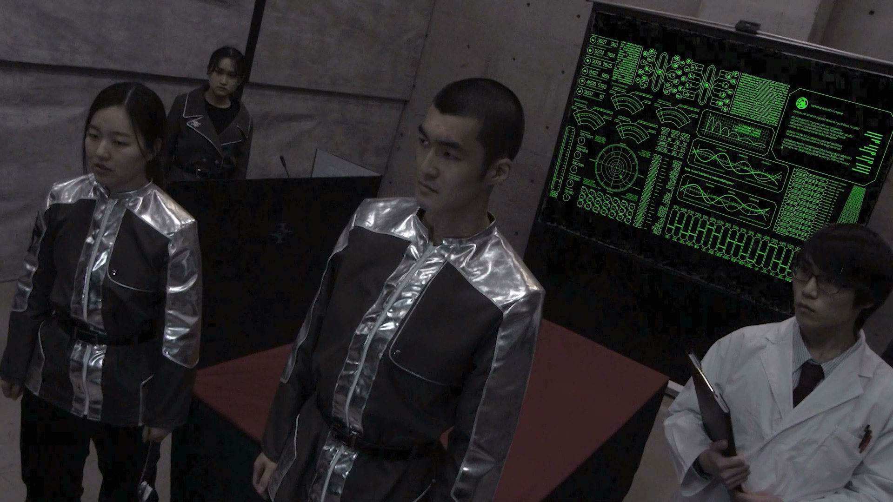
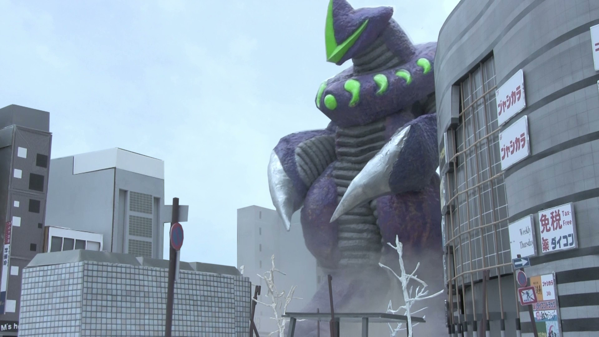
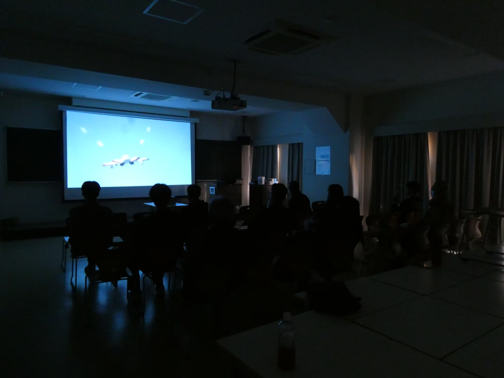
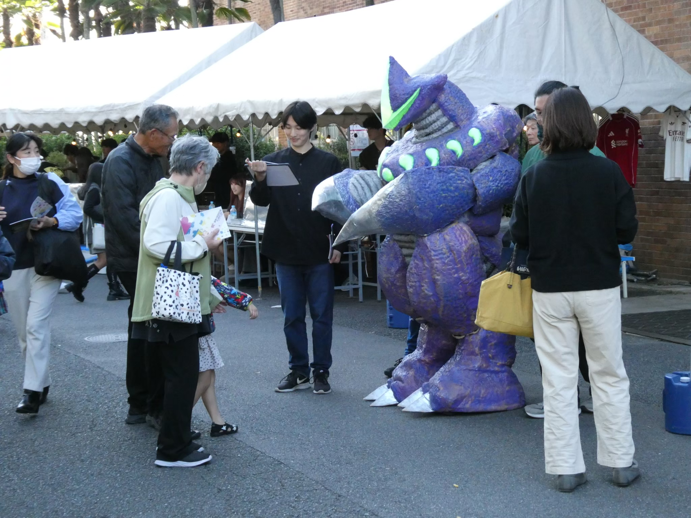
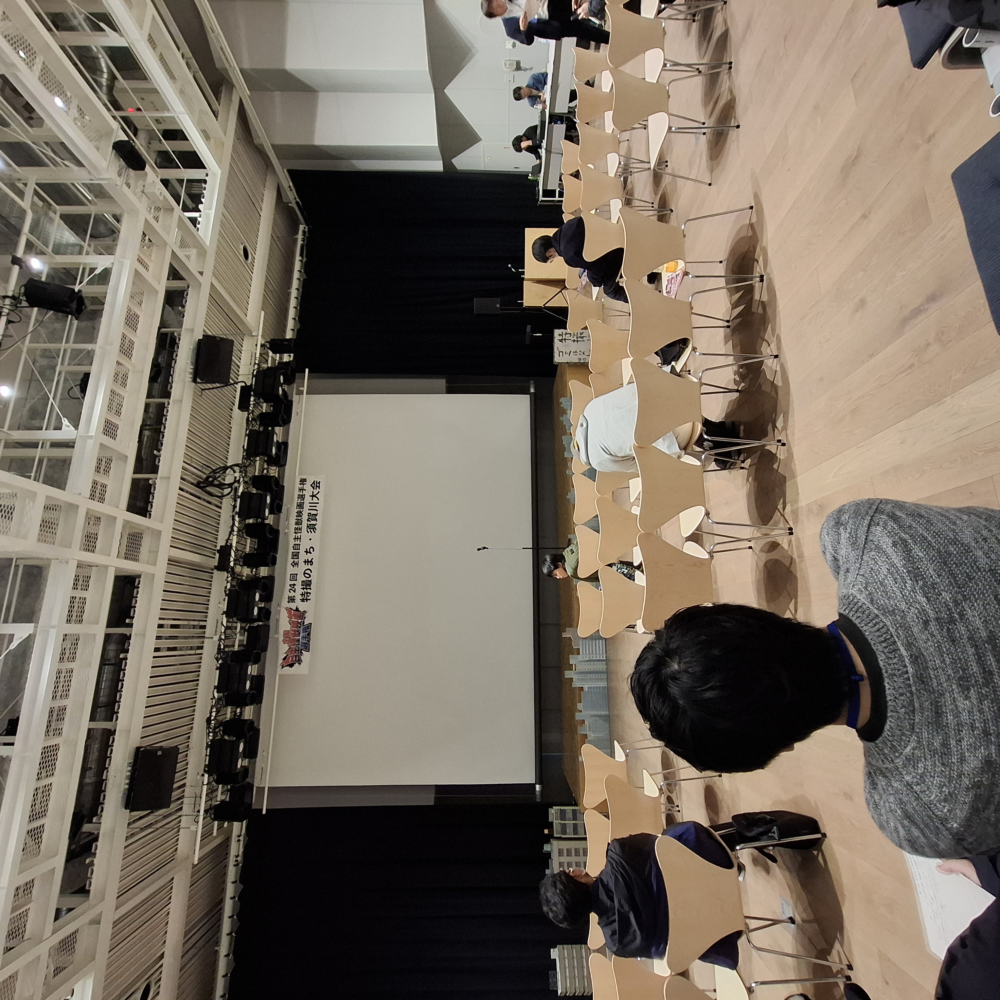
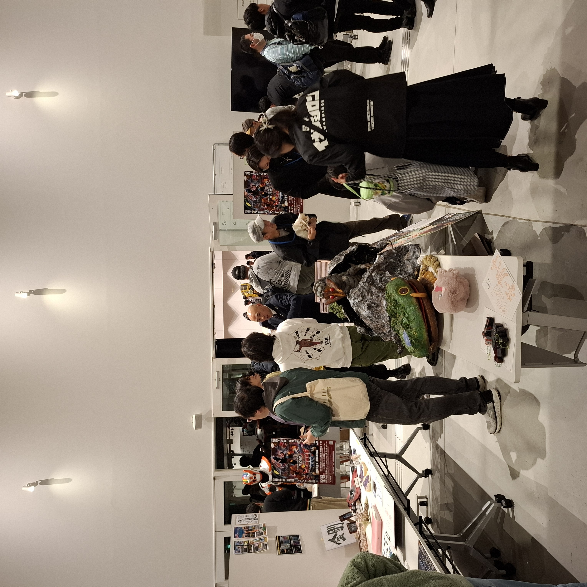

クラウドファンディングサイトでの『GELEL』プロジェクトページ
作品について
1999年以降、怪獣の出現が相次ぐ日本。怪獣によって母親を失ったアキは、防衛隊の一員として怪獣対策にあたっていた。そんな中、史上初となる宇宙怪獣“メルトロン”が京都に来襲。アキたち防衛隊は応戦するも、メルトロンには既存の装備が全く通用せず、焦りを募らせていく。そのとき、天空から金色に輝く謎の巨人が飛来した。それは正義の使者か、それとも…。


上映・展示について
2025年11月15日、16日に行われた京都工芸繊維大学学祭での映像研究会オリヲン座の展示・上映に組み込まれ、入場料500円で上映された。会場周辺には、実際に使われた美術を展示した。怪獣メルトロンが練り歩くこともあった。


また、12月7日に大阪のコミュニティスペース「5.6」、12月8日～14日に京都でのイベント「kougei noel」でも上映された。12月21日には、福島県須賀川市での「全国自主怪獣映画選手権 特撮のまち・須賀川大会」にて上映された。規模の大きさやオープニングアニメや美術が評価され、田口清隆賞を受賞した。
「全国自主怪獣映画選手権 特撮のまち・須賀川大会」公式サイト


作業プロセス
『GELEL』で私が担当した作業の内容は、作業プロセスに書いている。これは『GELEL超全集』（2026）に寄稿した文章を元にしている。